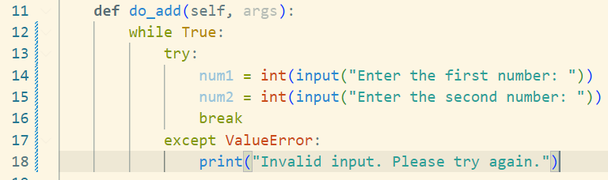
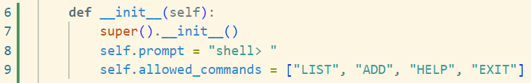
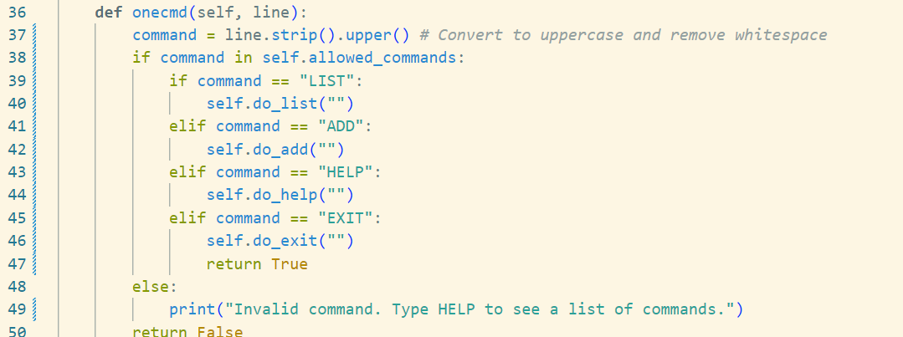
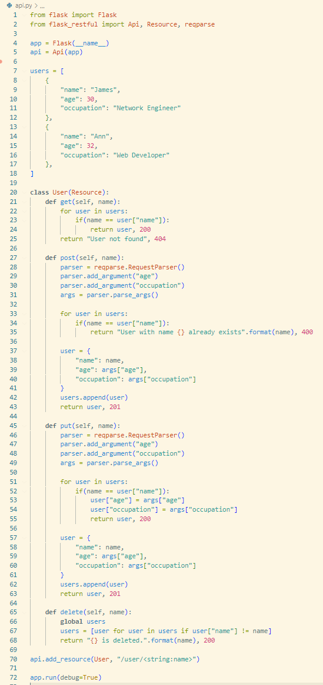
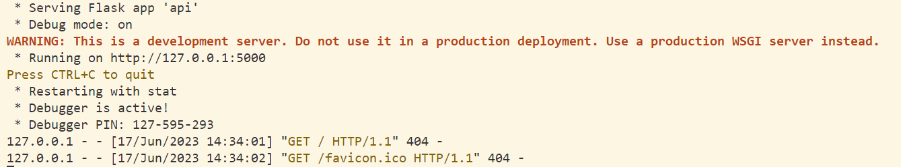
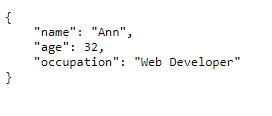
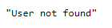

Unit 7: Artefacts
A simple Python Shell
Part of this unit was to write simple Python shell that accepts the following commands:
- LIST - Lists all files in the current directory
- ADD - Adds two numbers together and provides the results
- HELP - Provides a list of all available commands
- EXIT - Exits the shell
What are the two main security vulnerabilities in this shell?
The two vulnerabilities I can see in this code is that there is no input validation (for example within the "do_add" method), and that the code provides the interface for command injection by using the "onecmd" method.
What is one recommendation that would increase the security of the shell?
From what I can see, the best thing to do would be to add some from of input validation to the shell, which would solve both problems mentioned above, at least to some extent.
Improvements to security
The first thing I would do is add some form of input validaton to the "do_add" method. By adding a "while" loop to the code, the shell will continously ask for user input until it receives two integers. If the user adds anything other than integers, the code will catch the error.
Other than that, I would like to add some form of input validation to the "onecmd" method. I have adjusted the code so that it converts the user input, and then compares the command to a list of acceptable commands. If the user input is in the allowed commands, it is executed. If it is not, then the command will be rejected.
 Developing an API for a Distributed Environment
Question 1
Run the API.py code. Take a screenshot of the terminal output. What command did you use to compile and run the code?
To compile and debug the code, I used the inbuilt debugger within Visual Studio Code.
Question 2
Run the following command at the terminal prompt: http://127.0.0.1:5000/user/Ann - What happens and why?
When this URL is accessed, the code retrieves the entry for the specified user, which includes name, age, and occupation, as was specified in the code.
Question 3
Run the following command at the terminal: http://127.0.0.1:5000/user/Adam - What happens when this command is run, and why?
When the URL is accesse, the webpage states that the user cannot be found. This is expected and correct behaviour, as we did not specify this specific user within our user directory. As the user cannot be found, the webpage returns the statement as instructed as part of the "get()" method.
Question 4
What capability is achieved by the flask library?
The flask library enables us to create websites and webapps with both Python and HTML code. It allows us to run a webserver, host HTML pages and interact with these pages using Python code.